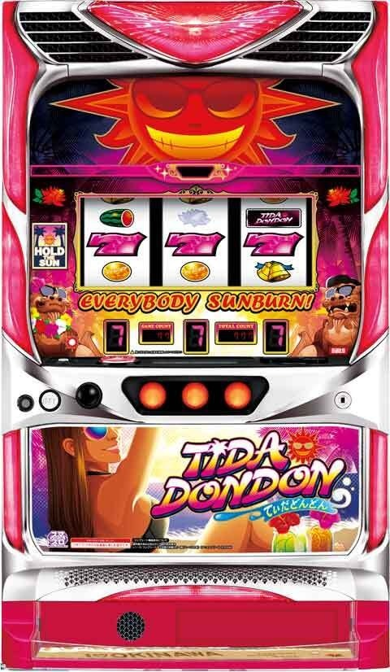

Lてぃだどんどん

【天井情報】
通常時を最大999G＋α消化でボーナスに当選。モードや状態によっても変化する。
朝イチリセット時 555G
ガトリングモード後 555G
リプ連チャンスモード 555G
引戻しモード 222G
【リセット判別】
不明
【有利区間について】
有利区間ツラヌキ要素があり、恩恵はヘブン高確率最上位の「ガトリングモード」へ移行!?
有利区間切れ条件 不明
狙い目
【リセット狙い】
300Gから
※リプ連モードの有無を見切られてるケース多いため実際は更に辛そう？
【AT間天井狙い】
670Gから
ガトリングモード後 250Gから
【有利区間切れ狙い】
不明
やめ時
50Gから80Gくらい回してやめ？
その他
参考元
基本情報
- メーカー: パオン・ディーピー
- 機械割: 97.7% 〜 110.3%
- 導入開始日: 2025年03月03日（月）
- ゲーム性概要: ●通常時は全役でヘブンを抽選 ●ヘブンは5G＋α継続で、全役にボーナスのチャンスあり ●ボーナスはBIG（平均345枚）とREG（平均56枚）の2種類 ●ボーナス終了後は最低33Gのヘブン高確率へ移行 ●ヘブン高確率は4段階あり、ボーナス等で状態昇格を抽選 ●最上位のガトリング到達でボーナス期待度は約93%！


打ち方
打ち方・小役
打ち方（小役狙い）
「最初に狙う絵柄」

左リールにBARを狙う。下段にスイカ停止時以外は、中右リールはフリー打ちでOKだ。
「スイカ下段停止時」

中＆右リールは白7を目安にスイカを狙う。スイカは取りこぼしても3枚の払い出しがあるので、損をすることはない。
「レア役の停止形」

確定役はボーナス当選濃厚。
「チャンス目」 チャンス目はほかのレア役とは性質が異なり、成立時の 約50%で次回3桁ゾロ目ゲーム数到達時にボーナス濃厚 する。

※左リールから順に上段・中段・中段にリプレイが止まればチャンス目
変則押しはNG
通常時、押し順ナビなし時は左リール第1停止での消化を推奨する。
解析情報通常時
小役関連
ヘブン当選期待度
| 役 | 期待度 |
|---|---|
| ハズレ | 低 |
| ベル | ↓ |
| リプレイ | ↓ |
| チェリー | ↓ |
| スイカ | 高（約33%） |
「EVERYBODY SUNBURN！ランプ」

ランプが点滅するとヘブン当選のチャンス。 全リール停止後にリール上のタッチセンサーに触って太鼓の音がしたらヘブン当選濃厚だ（ヘブン当選時の一部で発生）。
［タッチセンサー］

小役確率
| 役 | 確率 |
|---|---|
| スイカ | 1/89.8 |
| チェリー | 1/69.4 |
| 確定役 | 1/8192.0 |
レア役確率は全設定共通だ。
チャンス目成立時の抽選
チャンス目成立後は次の3桁ゾロ目ゲーム数到達時の約50%でボーナスに当選。複数回当選した場合は、当選した分だけボーナスがストックされる。 チャンス目を引きボーナスをストック→3桁ゾロ目ゲーム数到達前に自力でボーナスを引いた場合もストックは放出される。
※左リールから順に上段・中段・中段にリプレイが止まればチャンス目（リプレイの小L時型）
モード
引き戻しモード
| 項目 | 内容 |
|---|---|
| 突入契機 | ● ヘブン高確率から転落後の一部 |
| 突入時の 恩恵 | ● ヘブン当選率がアップし、222Gまでにボーナスに当選 ● ボーナス当選後は前回のヘブン高確率の状態に戻る （ストロングで終わった場合はストロングへ） |
リプ連チャンスモード
| 項目 | 内容 |
|---|---|
| 突入契機 | ● 設定変更後の約40% やヘブン高確率から転落時の一部で突入 ● リプ連チャンスモード滞在中にREG単発でヘブン高確から転落した場合は 50%以上 でリプ連チャンスモードへ ● REG単発が2回連続時や900G以上でのボーナス単発時も突入のチャンス |
| 突入時の 恩恵 | ● リプレイ2連でのヘブン当選期待度約40% ● ボーナス当選までモードの転落はナシ ● 滞在中の機械割は約114% |
| その他 | ● ボーナス終了後、78G目に台枠フラッシュ発生でリプ連チャンスモードの期待度アップ |
ヘブン
ヘブン概要
通常時は全役でヘブンを抽選していて、 ヘブン中の抽選でボーナスを目指すゲーム性 。ヘブンは5G＋α継続で、最終ゲームで小役を引くと1G延長される。 ヘブンに当選しても必ず告知されるわけではないので、通常時だと思っていたらいきなりボーナス告知が発生するケースもある。
ヘブン性能
| 項目 | 内容 |
|---|---|
| 当選契機 | 通常時の成立役に応じた抽選、 ボーナス獲得枚数契機の抽選、 ヘブン高確中の抽選 |
| 継続ゲーム数 | 5G＋α（5G目に小役揃いで1G延長） |
| 消化中の抽選 | 全役でボーナス抽選 |
| ボーナス期待度 | 約50% |
| その他 | ボーナス期待度約80%の強ヘブンもアリ |
ボーナス当選期待度
| ゲーム数・役 | 期待度 |
|---|---|
| 1～4G目 | 約1/10 |
| 5G目 | 約1/5 |
| チェリー | チャンス |
| スイカ | ボーナス濃厚 |
※チェリーとスイカはゲーム数不問で抽選
「太陽ランプ点灯でボーナス」

強ヘブン性能
| 項目 | 内容 |
|---|---|
| 当選契機 | ヘブン当選時の一部 （おもにボーナス後のヘブンスタート時に突入） |
| 継続ゲーム数 | 5G＋α（5G目に小役揃いで1G延長） |
| 消化中の抽選 | 全役でボーナス抽選 |
| ボーナス期待度 | 約80% |
| その他 | BIGの獲得枚数が200枚未満の場合、 強ヘブンスタート濃厚（※） |
※押し順ベルを取りこぼして枚数を調整しても強ヘブンには突入しない
ヘブン当選時の一部で、高期待度の強ヘブンに突入する。
規定ゲーム数
ゲーム数消化時の抽選
| ゲーム数 | 抽選内容 |
|---|---|
| 下記以外の3桁ゾロ目 | 抽選あり |
| 333G、555G、777G | チャンス |
| 78G、385G、479G | 抽選あり、スイカ成立でボーナス濃厚 |
通常時は3桁ゾロ目ゲーム数到達時に、成立役を参照してボーナス抽選がおこなわれる。333G、555G、777Gは期待度が高い。3桁ゾロ目ゲーム数のほかに、78G（那覇）、385G（宮古）、479G（与那国）といった語呂合わせのゲーム数もチャンスとなる。
解析情報ボーナス時
BIGボーナス
BIGボーナス概要

50G＋α継続の擬似ボーナス。消化中は レア役とハズレの連続でボーナスゲーム数のホールドが抽選 される。 ボーナス終了後は必ずヘブン高確率からスタート するのでボーナス連チャンのチャンス。終了時の獲得枚数に応じてヘブンを抽選していて、獲得枚数が多いほどチャンス。当選時はボーナス終了後にいきなりヘブンからスタートする。
BIGボーナス性能
| 項目 | 内容 |
|---|---|
| 当選契機 | ヘブン中の抽選、通常時の確定役、 規定ゲーム数到達時の抽選 |
| 継続ゲーム数 | 50G＋α |
| ボーナス比率 | BIG：REG＝約6：約4 |
| 1Gあたりの純増 | 約6.0枚 |
| 平均獲得枚数 | 345枚 |
| 消化中の抽選 | ハズレ連とレア役でのゲーム数ホールド抽選 |
| その他 | てぃだどんどんランプ点灯でボーナス1G連 |
「ゲーム数ホールド」 リール左のHOLDTHESUNランプが光ればホールドに当選。ホールドはベルナビ回数管理型で、2or3or5or10回のベルナビを消化するまで、ゲーム数の減算がストップする。

「てぃだどんどんランプ」 ランプ点灯で1G連濃厚！

「獲得枚数によるヘブン抽選」

獲得枚数ごとの色
| 枚数 | 色 |
|---|---|
| 199枚以下 | 青 |
| 200枚～ | 黄 |
| 300枚～ | 緑 |
| 400枚～ | 紫 |
| 500枚～ | 赤 |
BIGでの獲得枚数が多いほど、終了後にヘブンからスタートする期待度がアップ。400枚以上獲得なら、50%以上でヘブンスタートとなる。ヘブン高確率の状態が高いほど、ヘブンスタートの期待度も高い。 ※REG終了後もヘブンスタート抽選あり
でびる（でいごBIGループ）

BIG入賞時にリール左右のでいごの花が光ると、 ボーナス終了後5G以内のBIG当選濃厚 となる「でびる」へ突入。「でびる」自体にループ性があり、早いゲーム数でボーナス告知が発生するほどループしやすくなっている。 ボーナス後、1G目に告知が発生した場合の次回ループ期待度は約90%。
でびる性能
| 項目 | 内容 |
|---|---|
| 突入契機 | BIG当選時にリール左右のでいごの花が光る |
| 恩恵 | BIG後、5G以内のBIG当選濃厚 |
| その他 | でびる自体にループ性があり、 ボーナス告知が早いほどでびるループのチャンス |
| 1G目に告知発生時 | 次回ループ期待度約90% |
ベルナビ回数ホールド当選率
| 役 | 当選率 |
|---|---|
| 1枚役1～2連 | 抽選あり |
| チェリー | 52.0% |
| スイカ | 100% |
| 1枚役3連 | 100% |
ホールドされるベルナビ回数は2回が多いが、2回を超えた場合、50%以上で5回以上が選択される。
REGボーナス
REGボーナス概要

ベルナビ5回で終了。REG中にスイカを引くとヘブン高確率の状態が必ず1段階昇格する。
REGボーナス性能
| 項目 | 内容 |
|---|---|
| 当選契機 | ヘブン中の抽選、規定ゲーム数到達時の抽選 |
| 継続ゲーム数 | ベルナビ5回 |
| ボーナス比率 | BIG：REG＝約6：約4 |
| 1Gあたりの純増 | 約6.0枚 |
| 平均獲得枚数 | 56枚 |
| 消化中の抽選 | スイカ成立でヘブン高確の状態が1段階昇格 |
| その他 | てぃだどんどんランプ点灯でボーナス1G連 |
ヘブン高確
ヘブン高確率概要
ボーナス終了後に必ず突入する、ヘブンの高確率状態。連準備＜連ノーマル＜ストロング＜ガトリングと4つの状態があり、 上位の状態ほどヘブンに当選しやすい＝ボーナス期待度が高くなる 。 初当り後は基本的に連準備からスタートし、ボーナス当選で連ノーマルへ昇格。以降はボーナス当選時の抽選で上位状態への昇格が抽選される（ヘブン高確率を抜けるまで状態の転落はナシ）。
REG中のスイカは特殊抽選扱いで、 成立＝状態が必ず1段階昇 格。つまり、初当りREG中にスイカを1回引けばいきなり連ノーマルから、2回引けばストロングから始まる。
ヘブン高確率性能
| 項目 | 内容 |
|---|---|
| 移行契機 | ボーナス終了後 |
| 継続ゲーム数 | 最低33G （ヘブン高確率が78G継続でボーナス当選濃厚） |
| 消化中の抽選 | 高確率でヘブンに当選 |
| その他 | ボーナス当選時に状態昇格を抽選、 REG中のスイカ成立で必ず1段階昇格 |
状態ごとのボーナス期待度
| 状態 | 期待度 |
|---|---|
| 連準備 | 約40% |
| 連ノーマル | 約60% |
| ストロング | 約70% |
| ガトリング | 約93% |
ガトリング到達時の期待獲得枚数は約3000枚と強力！
［34G以降のハズレ時］ヘブン高確率からの転落率
| 状態 | 転落率 |
|---|---|
| 連準備 | 17.2% |
| 連ノーマル | 6.3% |
| ストロング | 6.3% |
| ガトリング | 6.3% |
33G目までは継続保証があるので、34G以降のハズレ時に転落を抽選。連ノーマル以上の平均滞在ゲーム数は52Gになる。
ヘブン高確率の状態昇格抽選の内容
| 状態 | 内容 |
|---|---|
| 連準備 | ボーナス当選で必ず連ノーマルへ |
| 連ノーマル以上 | BIGの約1/3で1つ上の状態へ昇格 |
| 不問 | REG中にスイカ成立で必ず1つ上の状態へ昇格 |
ツラヌキ・有利区間
ツラヌキ条件と恩恵
| 項目 | 内容 |
|---|---|
| 条件 | 調査中 |
| 恩恵 | ヘブン高確率のガトリングへ移行 ヘブン高確率はコチラ |
演出情報
通常時
演出法則
| 演出 | 法則 | |
|---|---|---|
| 予告音 | ● レバーON時に発生するレア役示唆 ● 強予告音はボーナスの期待大、ボーナス非当選時はヘブン当選濃厚 | |
| 消灯 | 1消灯 | ● ハズレ、リプレイ、チェリー対応 ● ハズレはヘブン滞在濃厚 ● リプレイはヘブン高確滞在示唆、ボーナス後5G以内の発生でヘブン当選orヘブン滞在中濃厚 |
| 消灯 | 2消灯 | ● 中段ベル対応 |
| 消灯 | 3消灯 | ● スイカ対応 |
| 消灯 | 法則矛盾 | ● ボーナス濃厚 |
| 払い出し音変化 （小粋なBGMが流れる） | ● ヘブン当選を示唆 ● リプレイ、ベル成立時の全リール停止後に発生でヘブン当選濃厚 ● いつもと違う音ならヘブンorボーナス濃厚 | |
| 遅れ | ● ボーナス濃厚 ● 強遅れなら確定役濃厚 | |
| ヘブンチェック | ● リール上のタッチセンサーを触って、太鼓の音（ドドン）が鳴れば当該ゲームでのヘブン当選濃厚 ※カランがデフォルト、パターンは複数存在 | |
| ボーナス終了後78G目 | ● 台枠フラッシュ発生でリプ連チャンスモード滞在の期待度アップ | |
| ねじりチェック | ● ボーナス当選ゲームの第3停止ボタンを3秒間押しっぱなしにすると、台枠ランプが発光する可能性あり |
リプレイ＋第1消灯の発生率
| 滞在状態 | 発生率 |
|---|---|
| 通常時 | 6.0% |
| ヘブン高確率 | 33.3% |
※どちらもボーナス後、34～78Gの発生率
ボーナス後5G以内に発生した場合はヘブン滞在中濃厚だ。
ボーナス告知演出での示唆
基本パターン以外はすべてBIG濃厚で、ヘブン高確率の状態を示唆するパターンもある。基本パターン時にタッチセンサーに触ると変化する可能性あり。
太陽ランプのパターンごとの示唆
| パターン | 示唆 |
|---|---|
| 点滅 | デフォルト |
| 高速点滅 | BIG濃厚 |
| 半分点灯 | BIG濃厚 |
| 連打点灯 | BIG濃厚 |
| 太陽つきっぱ | BIG濃厚 |
| 薄暗い太陽 | BIG濃厚 |
| 太陽ウインク | BIG濃厚＋ ヘブン高確率の上位状態ほど出やすい |
| 歯が光る | BIG濃厚＋ ヘブン高確率の上位状態ほど出やすい |
| 緑点灯 | BIG濃厚＋連ノーマル以上濃厚 |
| キラキラ点灯 | BIG濃厚＋連ノーマル以上濃厚 |
| 左右色違い点灯 | BIG濃厚＋連ノーマル以上濃厚 |
| 337拍子 | BIG濃厚＋連ノーマル以上濃厚、 ストロング以上で出やすい |
| 太陽先照れ | BIG濃厚＋ストロング以上濃厚 |
| 赤緑グラデーション | BIG濃厚＋ストロング以上濃厚 |
| 違和感演出 | BIG濃厚 |
違和感演出一覧
| No. | パターン |
|---|---|
| 1 | リール赤照明の時間が長い |
| 2 | リール周りがじわっと赤くなる |
| 3 | 枠真っ赤 |
| 4 | ロング低音 |
| 5 | 音遅れ |
| 6 | 太陽点灯遅れ |
| 7 | 全体的に遅れ |
リール系演出の示唆
| パターン | 示唆 |
|---|---|
| リール照明が緑 | BIG濃厚 |
| リール照明が青 | BIG濃厚 |
| リール照明が赤→緑 | BIG濃厚 |
| リール照明も太陽も緑 | BIG濃厚＋連ノーマル以上濃厚 |
| Vフラッシュ | BIG濃厚＋連ノーマル以上濃厚、 ストロング以上で出やすい |
| リール照明さざなみ | BIG濃厚＋ストロング以上濃厚 |
| リール照明が緑→黄→赤 （信号機のように移動） | BIG濃厚＋ストロング以上濃厚 |
| リール照明ストロボ | BIG濃厚＋ストロング以上濃厚、 ガトリングで出やすい |
| リール照明レインボー | BIG濃厚＋ガトリング濃厚 |
特殊系演出の示唆
| パターン | 示唆 |
|---|---|
| バイブ | BIG濃厚 |
| セグカウントダウン | BIG濃厚＋連ノーマル以上濃厚 |
| 小鼓音 | BIG濃厚＋ストロング以上濃厚 |
| 教会の鐘 | BIG濃厚＋ストロング以上濃厚 |
| 花火 | BIG濃厚＋ストロング以上濃厚 |
| 神々しい音 | BIG濃厚＋ストロング以上濃厚 |
| 花火 | BIG濃厚＋ストロング以上濃厚 |
| セクシーボイス | BIG濃厚＋ストロング以上濃厚 |
| 太陽がエネルギーをチャージ | BIG濃厚＋ガトリング濃厚 |
| ガトリングプレミア | BIG濃厚＋ガトリング濃厚 |
タッチセンサーで変化した場合の示唆
| パターン | 示唆 |
|---|---|
| 高速点滅 | BIG濃厚 |
| 半分点灯 | BIG濃厚 |
| 連打点灯 | BIG濃厚 |
| 太陽つきっぱ | BIG濃厚 |
| 薄暗い太陽 | BIG濃厚 |
| 太陽ウインク | BIG濃厚 |
| 歯が光る | BIG濃厚 |
| 緑点灯 | BIG濃厚 |
| キラキラ点灯 | BIG濃厚 |
| 左右色違い点灯 | BIG濃厚 |
| 337拍子 | BIG濃厚 |
| リール照明緑 | BIG濃厚 |
| 赤緑グラデーション | BIG濃厚＋ガトリング濃厚 |
| リール照明レインボー | BIG濃厚＋ガトリング濃厚 |
| 花火 | BIG濃厚＋ガトリング濃厚 |
| ガトリングプレミア | BIG濃厚＋ガトリング濃厚 |
タッチで変化した場合は一部示唆内容が変わる。
［緑点灯］

［リール赤照明］

ボーナス
ボーナス終了後のシーサーの目点灯
ボーナス終了後にタッチセンサーに触り、筐体左右のシーサーの目部分（サングラス）が光ればヘブン高確率の状態昇格濃厚。赤く光ればガトリング濃厚だ。

ヘブンスタート示唆
ボーナス終了後（最終獲得枚数表示〜ENDが表示されるまでの間）に、リール下のセグにウインクのような表示と効果音が鳴れば、ヘブンスタート濃厚となる。

BIG中の特殊楽曲
| 楽曲 | 搭載機種 |
|---|---|
| メガ！ギガ！サマー | ギラギラ爺サマー |
| ラコタス・ランデブー | 押忍！番長2 |
| 初-koi | 押忍！操 |
| フラウエム（広い海） | 吉宗 |
| ミーモ・ダンシング | 押忍！サラリーマン番長 |
| 貪欲DAYZ | ジャッカスチーム |
BIG中の楽曲が歴代大都ミュージックに変わればガトリング滞在濃厚だ。
BIG（以上）濃厚の7停止パターン
「デフォルトパターン」

「BIG濃厚パターン」

「BIG＋33G以内のボーナス濃厚パターン」

ベルナビホールド回数示唆演出
| 演出 | 示唆 |
|---|---|
| 赤ホールド告知 | ホールド5回以上 |
| 強予告音 | ホールド5回以上or1G連 |
| BET時に「イェーイ」ボイス | 残りホールド2回以上 |
33G以内のボーナス当選濃厚演出
| 演出 | 補足 |
|---|---|
| SPテンパイ音 | 連動してミニ太陽ランプも点灯 |
| REG中の楽曲変化 | 沖縄民謡の「じんじん」が流れる |
| ミニ太陽ランプ点灯 | ー |
［ミニ太陽ランプ］

でびる滞在濃厚パターン
| タイミング | 内容 |
|---|---|
| BIG入賞時 | ● ファンファーレがいつもと違う（音程が違う・音痴など） ● BETランプが紫 ● BET時のサウンドがでいごBIGループ中と同じ |
| 告知パターン | ● ガトリングプレミアロング ● でいごプレミア |